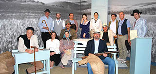

סמינר המעניק למשתתפים הזדמנות לאוורר את שאלת המנהיגות ולבחון את מקומה ואת משמעותה במעגלי החיים של כול אחת ואחד מהם. טכניקה – לומדים. מנהיגות? צומחים. לצד לימוד עיוני של מצב הידע בתחום, בסמינר יעשה שימוש בניתוח אירועים שיש בהם כדי להציע תובנות על אופייה הייחודי של מנהיגות, על מה שהיא תובעת מאיתנו ועל ההבטחה הטמונה בניסיון להגשים רעיונות ומאוויים גם כשאין יסוד להעריך את הסיכוי להצליח.

סמינר שאלת המנהיגות, אפריל-ספטמבר 2016
2016-04-02